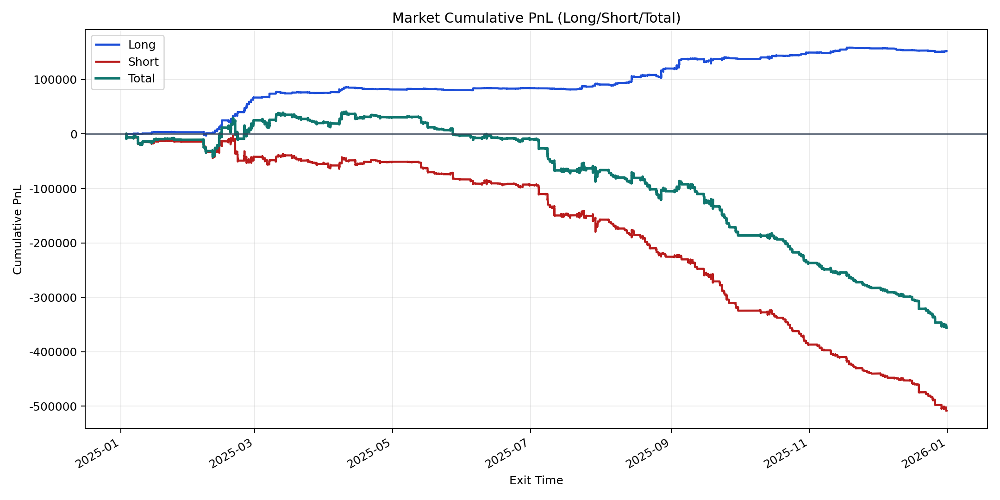
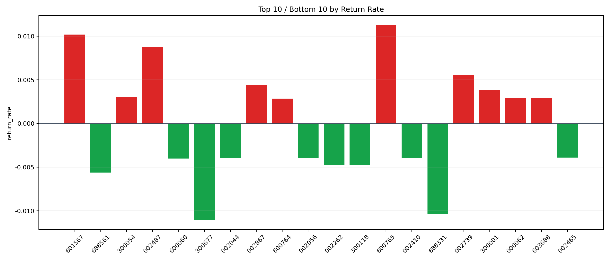

| repo_root | /home/haoranyou/data/output/alpha0.4_1w_5s_3ticks_index_filter/index_weights_500 |
|---|---|
| period_months | 12 |
| period_label | 2025-01-03_to_2025-12-31 |
| start_time | 2025-01-03 09:50:12 |
| end_time | 2025-12-31 15:00:00 |
| n_trades | 96488 |
| n_symbols | 242 |
| total_pnl | -355806.86739999935 |
| long_total_pnl | 152431.41494999998 |
| short_total_pnl | -508238.2823499994 |
| total_entry_notional | 895138158.0 |
| long_entry_notional | 175493905.0 |
| short_entry_notional | 719644253.0 |
| total_return_rate | -0.0003974882136574043 |
| long_return_rate | 0.0008685852363362704 |
| short_return_rate | -0.0007062354492949718 |
| top_symbols_by_return | ["600765", "601567", "002487", "002739", "002867", "300001", "300054", "603688", "000062", "600764"] |
| bottom_symbols_by_return | ["300677", "688331", "688561", "300118", "002262", "600060", "002410", "002044", "002056", "002465"] |

